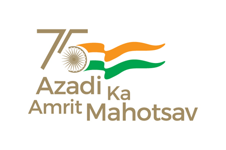

The Ministry of Human Resource Development (MHRD), which is now known as the Ministry of Education (MoE), Government of India (GOI) has established the National Testing Agency (NTA) as an independent, autonomous and self-sustained premier testing organisation for conducting efficient, transparent and international standard tests in order to assess the competency of candidates for admission to premier higher education institutions. NATIONAL ELIGIBILITY CUM ENTRANCE TEST [ NEET (UG) – 2024] will be conducted by National Testing Agency (NTA) on Sunday, 05 May 2024 (Sunday) in Pen and Paper mode in 13 languages, as a common and uniform National Eligibility-cum-Entrance Test [(NEET (UG)] for admission to undergraduate medical education in all medical institutions. Similarly, )as per Section 14 of the National Commission for Indian System of Medicine Act, 2020, there shall be a uniform NEET (UG) for admission to undergraduate courses in each of the disciplines i.e. BAMS, BUMS, and BSMS courses of the Indian System of Medicine in all Medical Institutions governed under this Act. NEET (UG) shall also be applicable to admission to BHMS course as per National Commission for Homeopathy Act, 2020.